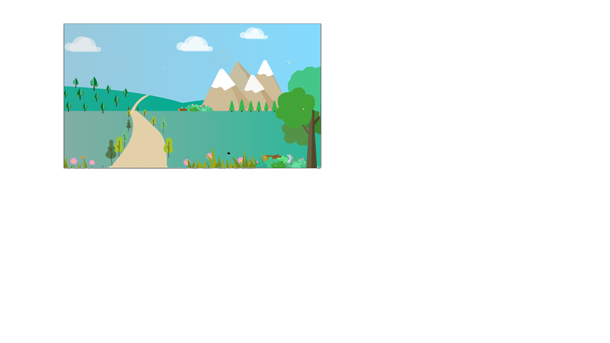
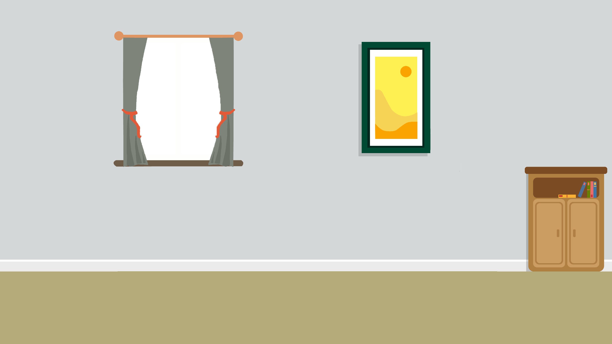
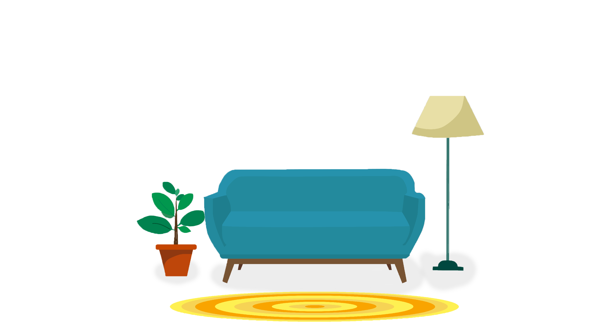

, nous devrions aller voir par la fenêtre comment s’est rétabli la planète après notre travail...

Ecokid n’est pas disponible dans ce format, tourne ton écran pour jouer !
, nous devrions aller voir par la fenêtre comment s’est rétabli la planète après notre travail...